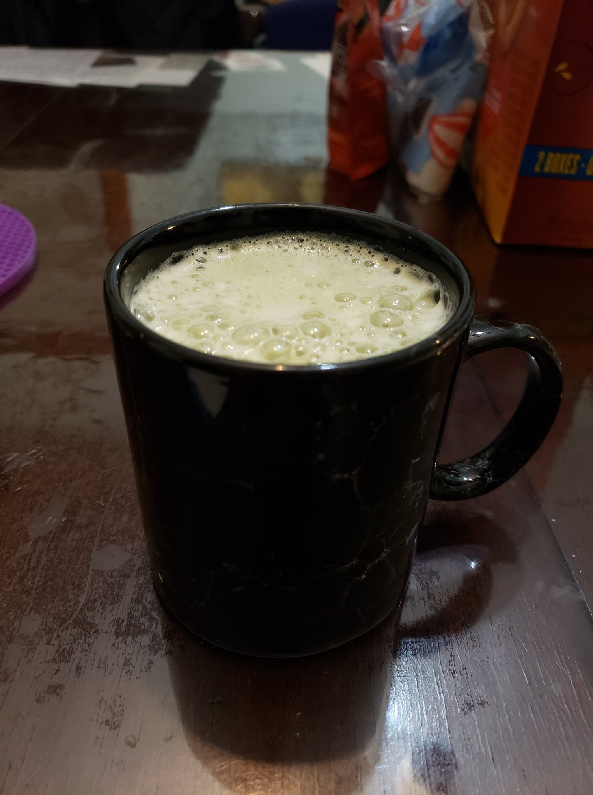

Matcha Latte

Ingredients:
- 1 tsp Matcha powder
- 2 tsp Sugar, or to taste
- 2-3 tbsp Hot water
- 1 cup Milk, cold or hot to preference
- Optional: Ice
Instructions:
Hot Latte:
- In a mug, mix the water and matcha power with a whisk to ensure there are no lumps.
- Warm the milk in a saucepan and pour it into the mug. Mix with a whisk until smooth.
- Mix in the sugar to taste.
Iced Latte:
- Optionally, in a small bowl, whisk together the matcha and water.
- Then in a blender bottle, combine all the ingredients and ice. Shake vigorously until completely combined.